Argentina fue una de las selecciones pioneras en la CONMEBOL Copa América, con su participación en la primera edición, disputada en 1916 en su capital, Buenos Aires. Es junto a Uruguay es la que más títulos ha conseguido a lo largo de la historia (15) y es la vigente campeona del torneo, luego de conquistar el título en Brasil 2021.
Ha participado en 42 ediciones, en las que leyendas del fútbol sudamericano llevaron puesta la camiseta Albiceleste, como Diego Armando Maradona, Lionel Messi y Mario Alberto Kempes.
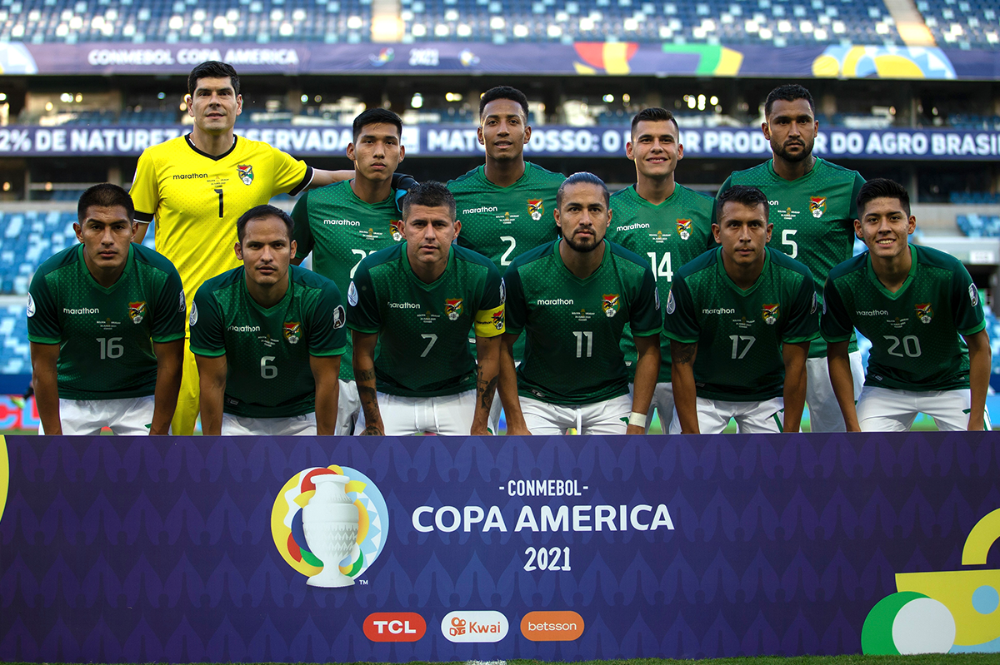
Bolivia
Bolivia levantó por única vez el trofeo de la CONMEBOL Copa América en la edición que disputó como local 1963, con el Estadio Hernando Siles de La Paz y el Estadio Féliz Capriles de Cochabamba como escenarios.
La Verde se consagró invicta, ganando 5 y empatando 1 partido, con Máximo Alcócer como máximo goleador (5 goles) y Ramiro Blancut como una de las figuras del torneo. En 1997 fue subcampeona también como local, al caer en la Final ante Brasil.
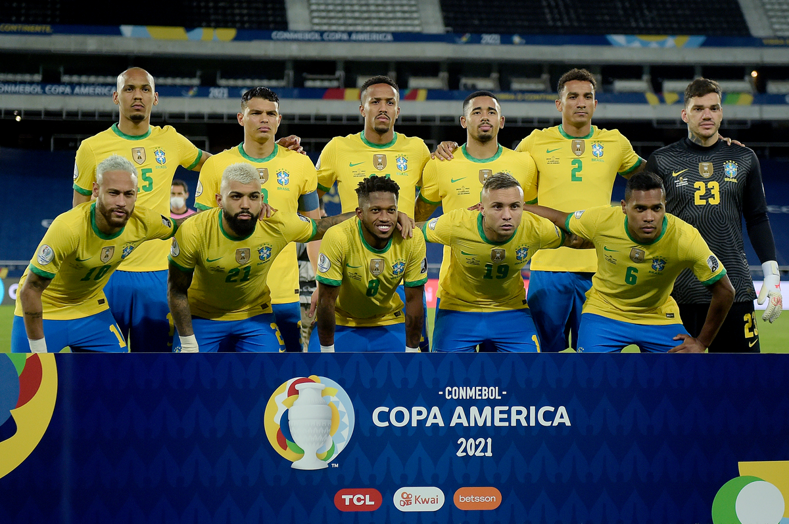
Brasil
Brasil es la tercera selección más ganadora en la historia de la CONMEBOL Copa América, conquistó su primer título cuando organizó el torneo en casa por primera vez, en 1919. El último lo ganó nuevamente en casa y justo cien años después, en 2019.
En la CONMEBOL Copa América 2024 jugará su edición número 38, sumando un capítulo más de historia por la que ya pasaron jugadores como Pelé, Cafú, Ronaldo, Ronaldinho, Rivaldo y decenas más de innumerables figuras del fútbol mundial.
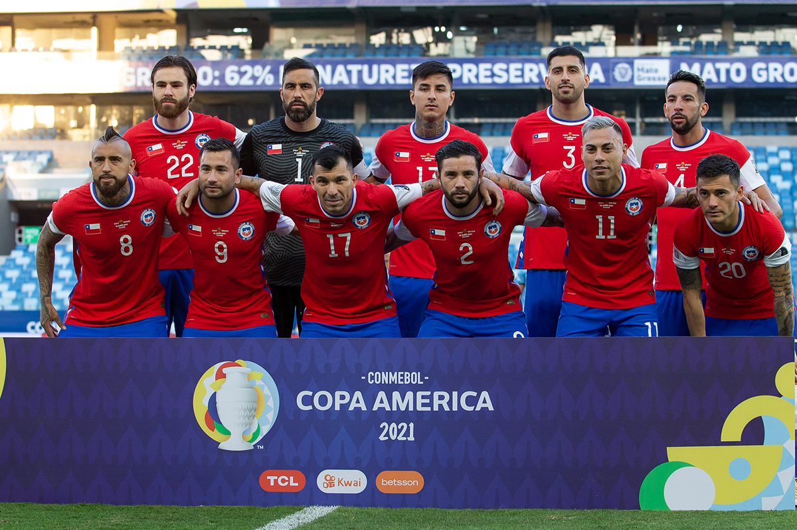
Chile
La selección chilena participará por vigésima novena vez de una CONMEBOL Copa América en la edición del 2024, que se jugará en Estados Unidos, sede de la CONMEBOL Copa América Centenario, donde La Roja se consagró bicampeona luego de haber conquistado también la edición previa en la CONMEBOL Copa América 2015.
El equipo de Chile, que conquistó sus dos títulos, estuvo con formada por la ‘Generación Dorada’, con Eduardo Vargas, máximo goleador en la competencia (14), Alexis Sánchez, máximo goleador histórico (52), Arturo Vidal, Claudio Bravo y Gary Medel.
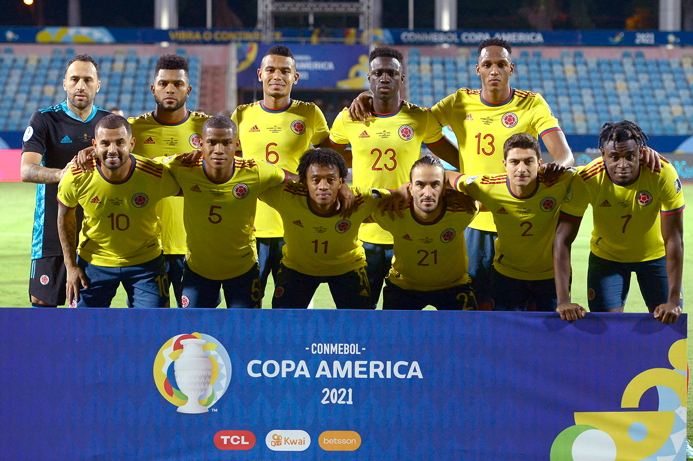
Colombia
Colombia llegó a lo más alto en la CONMEBOL Copa América cuando se consagró campeón en la edición disputada en su casa en el 2001. Los ‘cafeteros’ alcanzaron el título en una gran campaña, en la que ganaron sus 6 partidos, Óscar Córdoba mantuvo su arco invicto y Victor Aristazábal fue el goleador del torneo con 6 goles.
Francisco Maturana fue el entrenador que le dio a Colombia su primer título en la historia e Iván Ramiro Córdoba, el que marcó el gol decisivo en la final para conquistar la deseada copa en su tierra.
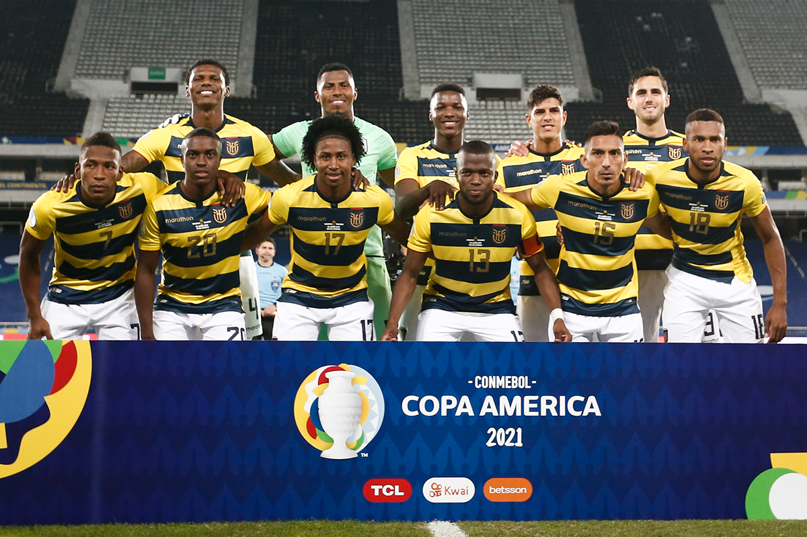
Ecuador
La historia de la selección de Ecuador en la CONMEBOL Copa América comienza en 1939, con su participación en la edición disputada ese año en Perú. Esta será la presencia número 30 de los ecuatorianos en el torneo continental de selecciones más antiguo del mundo.
Ecuador fue sede del torneo en tres ediciones, 1947, 1959 y 1993, siendo las dos últimas sus mejores participaciones, ya que en ambas quedó en el cuarto lugar del torneo.
Jugadores históricos representaron a la selección ecuatoriana en la CONMEBOL Copa América, como Alex Aguinaga, Alberto Spencer, Antonio Valencia y Agustín Delgado.
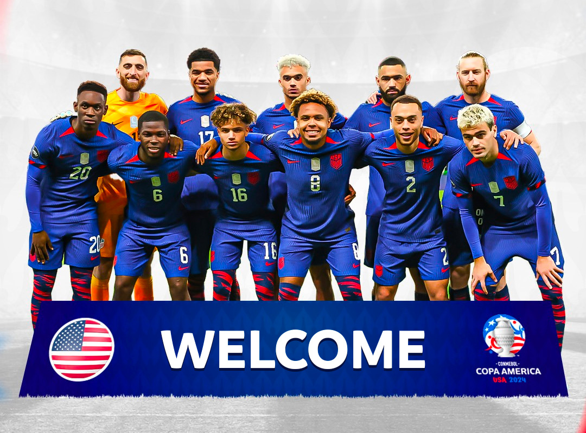
Estados Unidos
La selección de Estados Unidos de América fue invitada por primera vez a participar en una CONMEBOL Copa América para la edición disputada en 1993, en Ecuador. En el siguiente torneo, jugado en Uruguay 1995 llegaría una de sus mejores participaciones, al quedar primera en su grupo, en el que ganó a Chile y Argentina, y luego avanzar hasta las Semifinales.
Volvió a jugar en la edición de 2007 y recibió por primera vez el torneo en casa en el 2016, en la CONMEBOL Copa América Centenario, campeonato en el que nuevamente alcanzo las Semifinales.
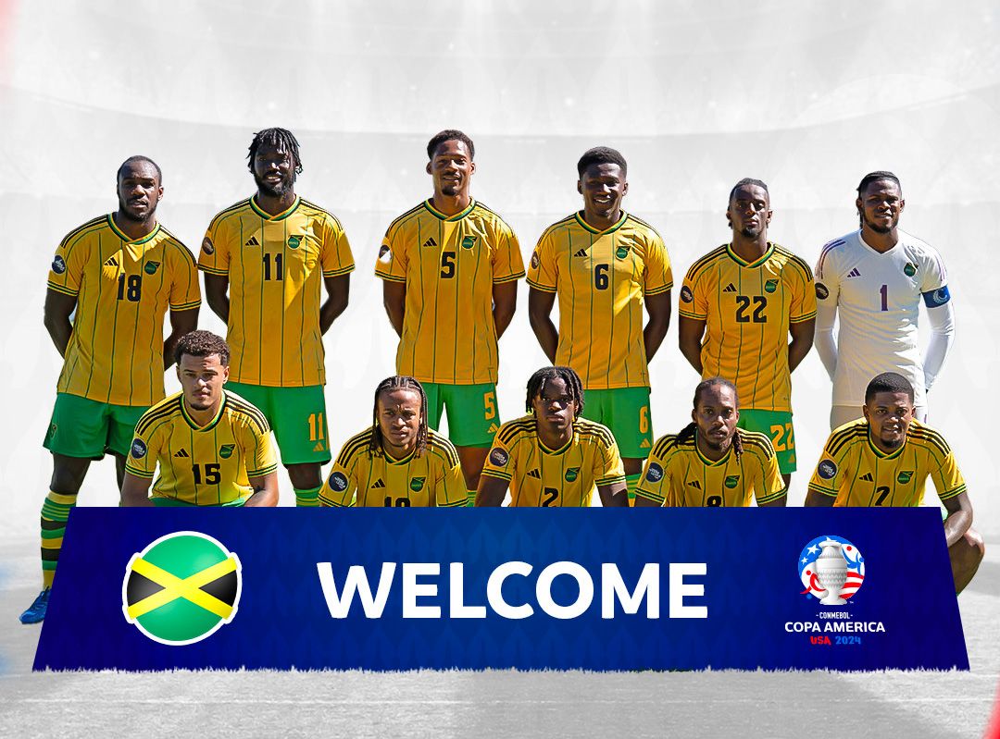
Jamaica
En la CONMEBOL Copa América 2024 la selección de Jamaica jugará su tercera edición del torneo continental, ya que estuvo presente en las de Chile 2015 y en la edición del Centenario en 2016. Los Reggae Boyz tienen el gran objetivo de mejorar sus participaciones anteriores y conseguir su primera victoria en la historia de la competencia.
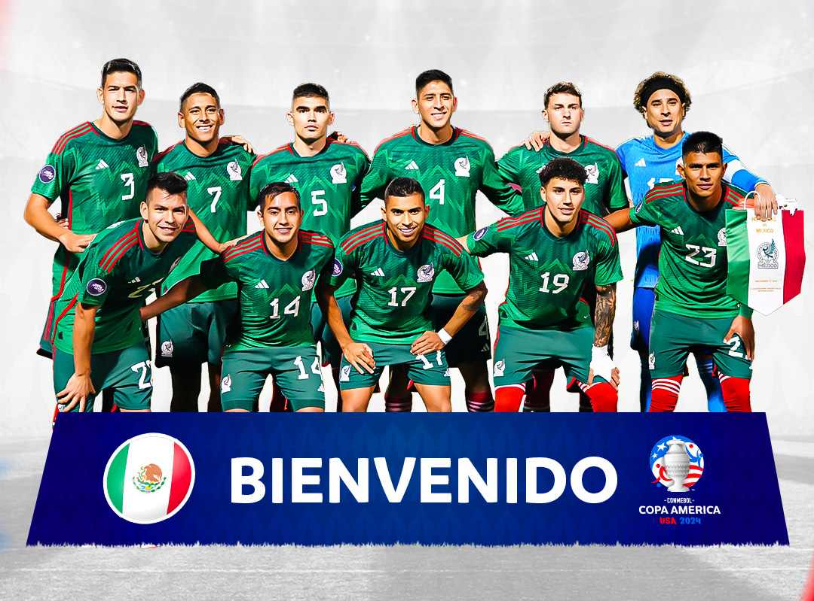
Mexico
México es la selección no perteneciente a CONMEBOL con más historia en la CONMEBOL Copa América, ya que esta será su decimoprimera participación en el torneo y ya lleva dos finales disputadas, lo que la convierte en el único país de otra confederación en lograrlo.
Su primera Final en el torneo se dio en su debut, en 1993, con un equipo de leyendas como Hugo Sánchez, Jorge Campos, Alberto García Aspe y ‘Zague’ Alves. Ocho años después llegó la segunda, en Colombia 2001, cuando cayó en el partido decisivo ante la selección local.
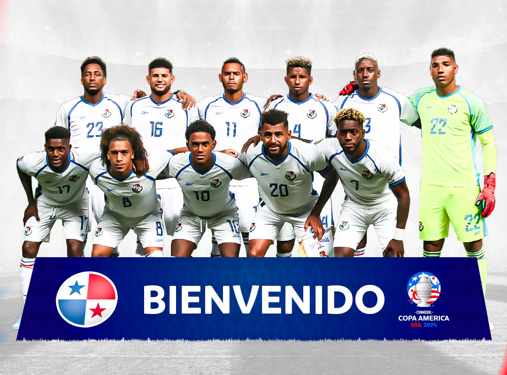
Panamá
Panamá jugará por segunda vez en la historia el torneo continental más antiguo del mundo. Debutó en la edición del Centenario en 2016 y en Estados Unidos 2024 tendrá el gran objetivo de avanzar por primera vez de la Fase de Grupos.
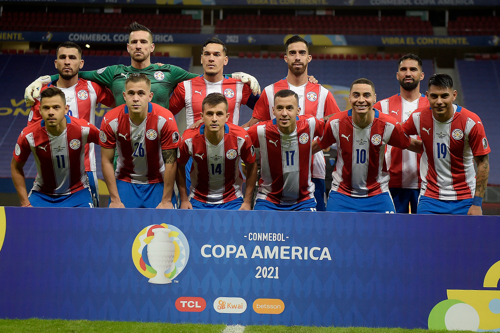
Paraguay
La selección paraguaya es detrás de Uruguay y Argentina la tercera selección con más participaciones en la historia de la CONMEBOL Copa América, con 38 ediciones desde su debut en 1921 hasta la edición pasada, cien años después, en 2021.
Conquistó en dos oportunidades el título, la primera, en la edición de 1953 disputada en Perú, venciendo dos veces a Brasil, durante el torneo regular y luego, en un partido de desempate al igualar en puntos. La segunda conquista fue en 1979, en una edición disputada en toda Sudamérica, en la que tuvo en sus filas a grandes figuras del fútbol sudamericano, como Roberto Fernández, Carlos Kiese, Hugo Talavera, Julio César Romero y Roberto Cabañas.
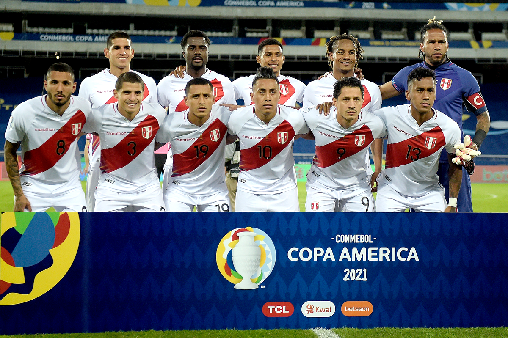
Perú
La selección de Perú debutó en la competencia en el año 1927 y logró el título en la tercera edición disputada Lima, en el año 1939, con siete goles de su máximo goleador en la historia de la competencia, Teodoro Fernández.
El segundo título fue conquistado en 1975, edición disputada sin sede fija, con figuras como Héctor Chumpitaz, Teófilo Cubillas, Meléndez y Juan Carlos Oblitas, con la dirección técnica de Marcos Calderón.
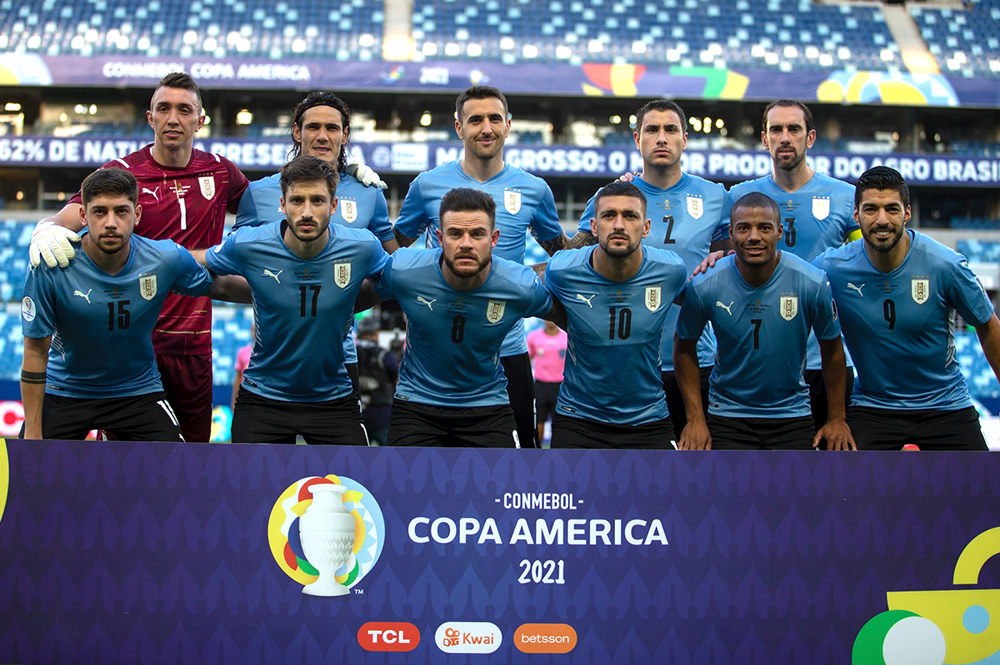
Uruguay
Uruguay es la selección que más veces a participado en la CONMEBOL Copa América, con 45 ediciones sin contar la edición del 2024 y es junto a Argentina la que más veces la ha ganado, con 15 títulos, cosecha que comenzó al conquistar las primeras dos ediciones en la historia de la competencia, en 1916 y 1917.
Desde Ángel Romano, Héctor Scarone y Obdulio Varela, dominantes en las primeras décadas del fútbol sudamericano y multicampeones de América, hasta Luis Suárez, Forlán y Muslera, ganadores del último título de Uruguay en la competencia en el 2011, grandes jugadores y campeones vistieron la camiseta celeste en el torneo, Enzo Francescoli, Pablo Bengoechea o Fernando Álvez.
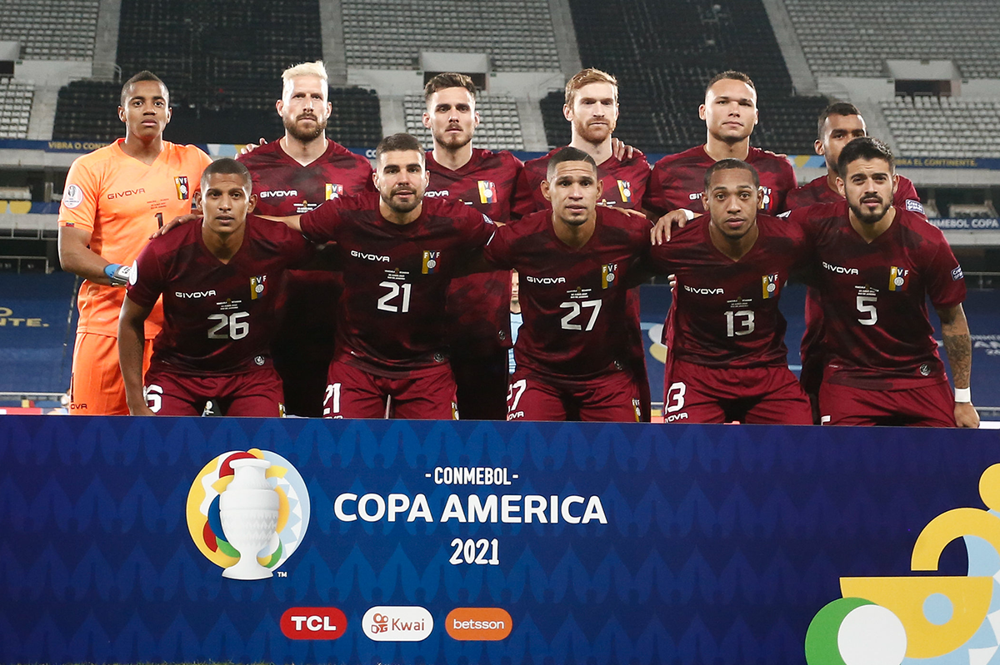
Venezuela
Venezuela fue la última selección miembro de la CONMEBOL en debutar en la CONMEBOL Copa América, lo hizo en la edición de 1967 disputada en Uruguay.
La Vinotinto ha tenido grandes jugadores que jugaron el torneo a lo largo de la historia, como José Luis Dolgetta, máximo goleador venezolano del torneo y goleador de la edición de 1993, Stalin Rivas, Juan Arango, Salomón Rondón, Oswaldo Vizcarrondo y Tomás Rincón.